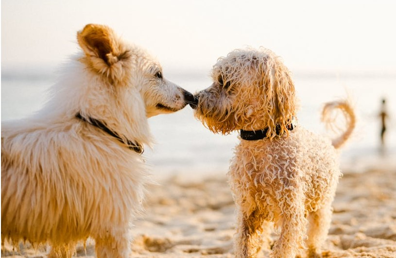

¿Qué es el Método CER?
El Método CER (Captura, Esterilización y Retorno) es una técnica ética y efectiva para controlar las colonias de gatos callejeros, garantizando su bienestar y reduciendo su proliferación.

¿Por qué apoyar el Método CER?

Historias de adopción
Eventos y actividades